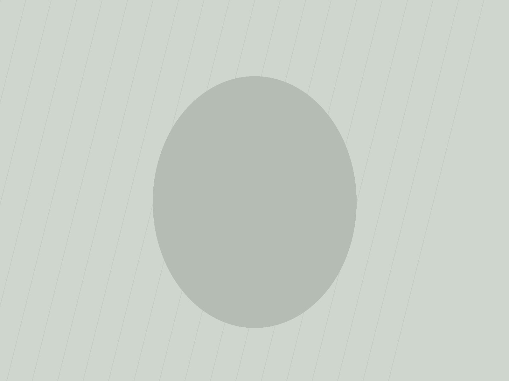
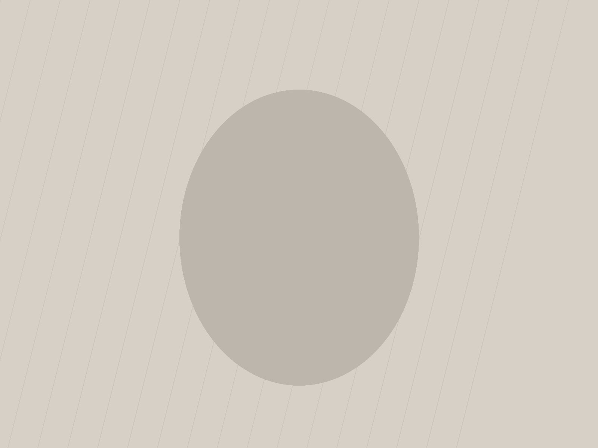

「一覧を見る」を見出しの下や一覧の後ろに置かず、見出しと同じ1行へベースライン揃えで畳む。
級数比が4〜6倍あるので、隣り合った瞬間に見出しの大きさが相対値として立ち上がる。
① 同じ見出し・同じ導線で、置き方だけを変える
普通：見出しは中くらい、導線は一覧の下に横長ボタン
PROJECT

2026.00.00見出しが入ります

2026.00.00見出しが入ります
一覧を見る
見出しの上下と、ボタンの上下で、余白が2箇所ぶん要る。
この工夫：84px と 9px を同じ1行に置く
上下の余白を一切使わずに見出しと導線が1行に畳まれ、そのぶん見出しを大きくできる。
② 離し方は2通り
密着型：gap は 14px（リンク1文字分）だけ
両端型：同じ1行の両端へ振る（space-between）
密着型は「見出しに付いている導線」、両端型は「行そのものが導線の帯」に見える。どちらも行数は1行のまま。
③ 級数比を動かす（リンクは9pxのまま固定）
2倍では「小さめのリンク」にしか見えない。4倍を超えたあたりから、リンクが級数の物差しとして働き始める。
④ 下線のはみ出しと、崩れる条件
下線を文字幅ぴったりで引く（弱い）
下線を左右6pxずつ長く引く（この工夫）
下線が文字より長いと、9pxでも「押せる帯」として認識できる。
崩れる例：見出しが2行に折れるとき
ベースラインは最終行に合うので、リンクが見出しの下端まで落ちる。1行に収まる語だけに使う。